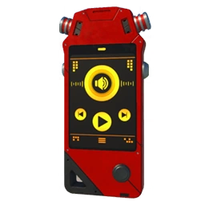

The Starfall Islands
8 November 2022

Sonic's
on the island. Of course Sonic is on the island. I can't
remember the last time I had a good night's scheme without him
ruining it. Still, for a purely organic creature, obtaining Mach
1 of his own volition is impressive. I'm man enough to admit
that...
It's Sonic who named me "Eggman." Except the joke's on
him! I embraced the name! I made it my own! His mockery is now a
name feared across the ages! I'm not going to adopt
"Baldy McNosehair," though. My dignity has it's limits.
It appears Amy Rose has been dragged into the mix. Clever girl. Tenacious. She's come a long way since being an easy pawn in my schemes to ensnare Sonic... It seems like she had some trouble finding herself. But when you hang around with someone with as big an ego as Sonic, self-identification has to be a challenge.
Knuckles is here too. What a rube. That hair-trigger of his is a problem, but also a boon when I can get him to go off in the right direction... Wait! If he's here, that means the Master Emerald is unguarded! Its power will be mine! Oh. No, wait. I'm stuck here. Phooey.
Sonic's here, so it's no surprise Tails is too. It's a pity. Young Prower has a keen mind and loads of potential. Yet he's fixated on worshipping Sonic... Then again, maybe that's for the best. Given all the trouble he gave me in Station Square and on the ARK, I think I prefer him wasting his potential lingering in Sonic's shadow.
Some force is keeping me from exiting Cyber Space. Is it because my A.I. made unauthorized access to the databases? If so, that's the exact opposite of what it was supposed to do! The "terrain" here keeps shifting. I'm finding recreations of regions from South Island, West Side Island, even Angel Island! Where is this environmental data coming from?